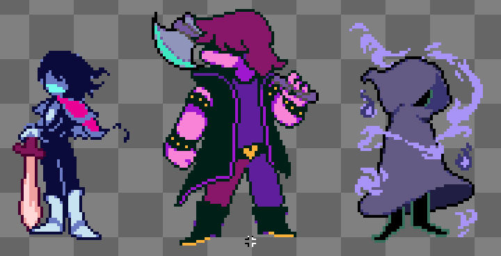
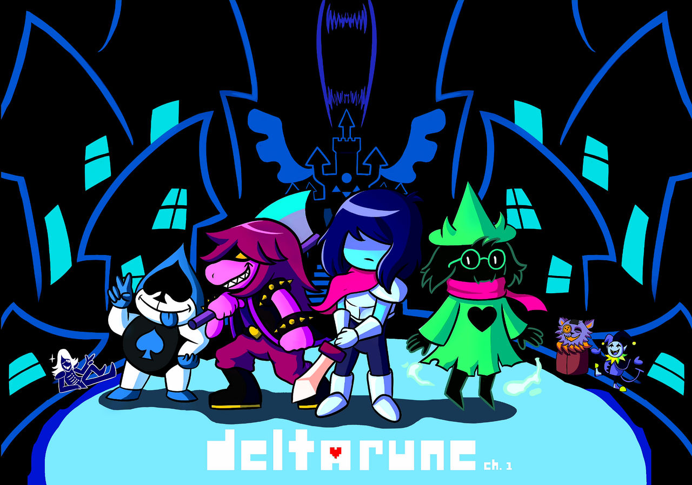
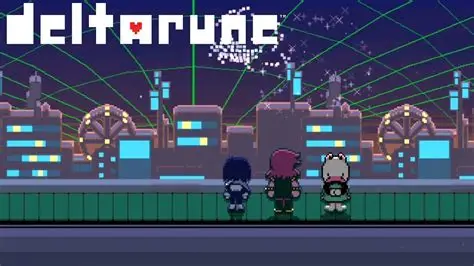
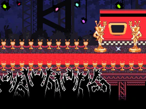

Deltarune é um jogo eletrônico de RPG criado por Toby Fox, conhecido também por ser o criador de Undertale. A história acompanha Kris, Susie e Ralsei em uma aventura por mundos misteriosos chamados Dark Worlds. O jogo mistura exploração, batalhas, humor e uma história cheia de personagens marcantes. Durante a aventura, os personagens precisam enfrentar diversos inimigos e descobrir os mistérios por trás dos Dark Worlds. As ações do jogador também podem influenciar alguns acontecimentos e a maneira como determinadas situações se desenvolvem.


O Capítulo 1 é responsável por apresentar o universo de Deltarune, seus principais personagens e o conceito dos Dark Worlds. A história começa com Kris, protagonista do jogo, vivendo sua rotina normalmente. Kris estuda em uma escola onde também está Susie, uma colega conhecida por seu comportamento agressivo e intimidador. Durante uma atividade escolar, Kris e Susie são enviados para buscar giz. Ao entrarem em uma área escura da escola, eles acabam descobrindo uma passagem para um lugar completamente diferente. Ao atravessarem essa passagem, os dois chegam a um Dark World. Nesse novo mundo, Kris e Susie conhecem Ralsei, um príncipe que explica a situação para eles. Ralsei acredita que Kris e Susie fazem parte de uma profecia e que eles devem ajudar a impedir que a escuridão domine o mundo.
Ralsei também explica a importância das Dark Fountains. Segundo ele, as fontes são responsáveis pela criação dos Dark Worlds e possuem uma relação importante com o equilíbrio entre a luz e a escuridão. Kris, Susie e Ralsei começam então uma jornada para encontrar a fonte daquele mundo. Durante o caminho, eles passam por diferentes regiões e encontram diversos Darkners.
Um dos personagens mais importantes encontrados durante essa aventura é Lancer. Ele é filho do King, o principal antagonista do capítulo. Lancer inicialmente tenta impedir Kris e seus companheiros, mas sua personalidade divertida faz com que sua relação com o grupo se torne mais complexa ao longo da história. Susie também passa por uma importante mudança durante o capítulo. No começo, ela não demonstra interesse em ajudar Kris ou seguir as orientações de Ralsei. Porém, conforme a aventura avança, ela começa a se aproximar dos outros personagens e demonstra que pode se importar com seus companheiros.
No final da aventura, o grupo chega ao castelo e enfrenta o King. Depois dos acontecimentos finais, Kris e Susie retornam ao mundo da luz. Porém, a descoberta dos Dark Worlds muda completamente a vida dos personagens e deixa vários mistérios para os capítulos seguintes. O primeiro capítulo funciona principalmente como uma introdução ao universo de Deltarune. Ele apresenta os protagonistas, os Dark Worlds, os Darkners, as Dark Fountains e vários elementos que serão importantes para o restante da história.
O Capítulo 2 continua a história depois dos acontecimentos do primeiro capítulo. Kris e Susie retornam ao Dark World e descobrem que existe outro mundo sombrio relacionado à biblioteca da escola. Diferentemente do primeiro Dark World, que possui uma aparência mais próxima de um reino de fantasia medieval, esse novo ambiente possui uma forte influência tecnológica. O local apresenta computadores, prédios, cidades, veículos e diversos elementos relacionados à tecnologia. Durante essa aventura, Kris e Susie encontram novamente Ralsei e continuam sua jornada juntos. Porém, dessa vez, outros personagens do mundo da luz também acabam envolvidos na aventura. Entre eles está Noelle Holiday, colega de escola de Kris. Noelle é uma personagem tímida e insegura que possui uma relação importante com Kris. Outro personagem importante é Berdly, um estudante extremamente confiante que gosta de demonstrar sua inteligência. A principal antagonista do capítulo é Queen, uma personagem que governa grande parte daquele Dark World. Queen possui uma personalidade exagerada, engraçada e autoritária. Ela acredita que está fazendo o melhor para seus objetivos, mas acaba colocando outras pessoas em situações perigosas.
Queen demonstra grande interesse em Noelle por causa de suas habilidades. Ela tenta convencer Noelle a seguir seus planos, enquanto Kris, Susie e Ralsei procuram impedir que isso aconteça.
O capítulo também apresenta Spamton, um personagem peculiar que vive em uma parte mais escondida do Dark World. Spamton é um vendedor que tenta convencer Kris a aceitar suas propostas. Sua história é cercada de mistérios e possui uma relação importante com os temas de sucesso, liberdade e controle.
Durante o capítulo, Kris e seus companheiros exploram várias áreas do Cyber World. Eles enfrentam diferentes inimigos, resolvem desafios e conhecem vários Darkners.
O capítulo também desenvolve bastante os personagens. A relação entre Kris e Susie continua evoluindo, enquanto Noelle passa a ter uma participação maior na história. O jogador também começa a perceber que os acontecimentos de Deltarune podem possuir consequências mais profundas do que parecem inicialmente.
Ao final, Kris e seus companheiros conseguem lidar com a ameaça de Queen e retornam ao mundo da luz. Entretanto, mais uma vez, uma nova Dark Fountains aparece e aumenta os mistérios relacionados à origem dos Dark Worlds.

O Capítulo 3 continua a história imediatamente após os acontecimentos do segundo capítulo. Depois de retornar para casa, Kris se encontra novamente envolvido com os acontecimentos relacionados às Dark Fountains. O novo Dark World possui uma temática bastante diferente dos anteriores. O ambiente está relacionado à televisão e ao entretenimento, apresentando programas, desafios, personagens extravagantes e situações que lembram diferentes tipos de atrações televisivas.
Uma das principais características desse capítulo é a forma como o ambiente transforma a aventura em uma espécie de programa de televisão. Os personagens passam por diferentes desafios e situações enquanto exploram o novo mundo. O capítulo também apresenta novos personagens e inimigos, ampliando o elenco de Deltarune. Assim como nos capítulos anteriores, muitos desses personagens possuem personalidades exageradas e momentos de humor, mas também podem ter histórias mais profundas. Kris, Susie e Ralsei continuam trabalhando juntos enquanto tentam entender o que está acontecendo. A amizade entre os personagens continua sendo um dos elementos importantes da narrativa.
O terceiro capítulo também ajuda a desenvolver os mistérios relacionados às Dark Fountains. Conforme a história avança, fica cada vez mais evidente que as fontes não são apenas uma forma de criar novos cenários para as aventuras. Os acontecimentos do capítulo também ajudam a estabelecer uma ligação maior entre o mundo da luz e os Dark Worlds. Personagens e acontecimentos que parecem separados podem estar conectados de maneiras que o jogador ainda não compreende completamente.
A exploração continua sendo uma parte importante do capítulo. O jogador pode encontrar diferentes áreas, personagens e desafios, além de participar das batalhas características do sistema de combate de Deltarune. O capítulo mantém a mistura de humor, aventura e mistério presente nos capítulos anteriores. Ao mesmo tempo, ele continua aumentando as perguntas sobre Kris, as Dark Fountains e a verdadeira natureza dos Mundos Sombrios.
Deltarune está disponível para diferentes plataformas, permitindo que os jogadores escolham onde preferem acompanhar a aventura. O jogo pode ser encontrado em PC, Nintendo Switch, PlayStation e Xbox, dependendo da versão e dos capítulos disponíveis.
No computador, Deltarune pode ser jogado por meio de plataformas como a Steam. Também existe uma versão oficial disponibilizada pelo próprio site do jogo.
Nos consoles, o jogo está disponível para Nintendo Switch, PlayStation 4, PlayStation 5, Xbox One e Xbox Series X|S. Isso permite que jogadores de diferentes plataformas tenham acesso à aventura de Kris, Susie e Ralsei.
A disponibilidade e a forma de distribuição dos capítulos podem variar de acordo com a plataforma. Por isso, é recomendado consultar as lojas oficiais para verificar quais versões estão disponíveis.
Deltarune também possui versões oficiais para diferentes sistemas, permitindo que os jogadores conheçam a história sem precisar utilizar versões não oficiais ou modificadas.